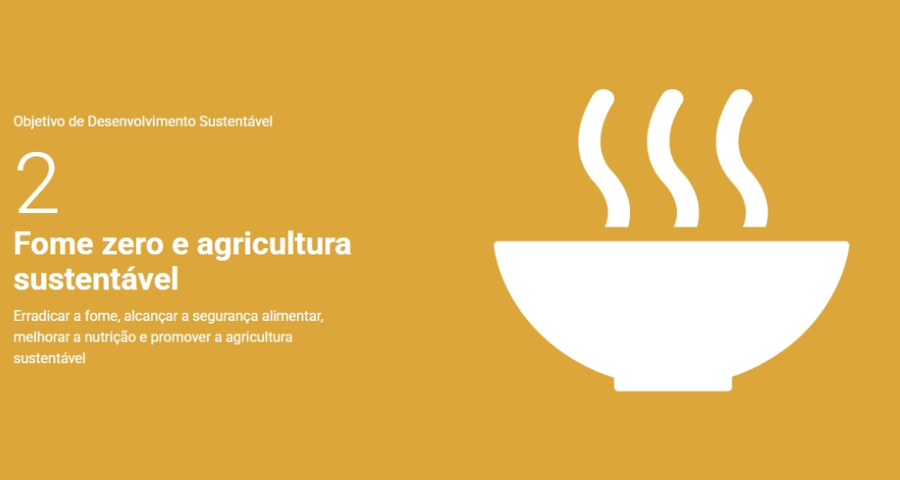
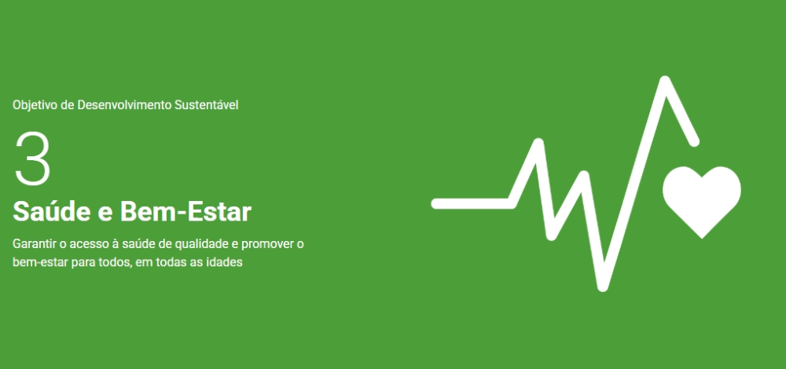

O ODS da ONU busca erradicar a fome, garantir segurança alimentar e melhorar a nutrição, promovendo também práticas de agricultura sustentável.
Isso significa assegurar o acesso de todas as pessoas a alimentos suficientes, seguros e nutritivos durante todo o ano, bem como apoiar pequenos agricultores e incentivar sistemas de produção que respeitem o meio ambiente.
O ODS visa garantir uma vida saudável e promover o bem-estar para pessoas de todas as idades. Entre suas metas estão a redução da mortalidade infantil e materna, o controle de doenças transmissíveis e não transmissíveis, e o fortalecimento de sistemas de saúde.
No ambiente de trabalho e nas comunidades, isso significa promover saúde física, mental, segurança e qualidade de vida, com acesso a cuidados preventivos, educação em saúde e práticas de vida saudável.
